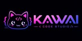
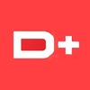
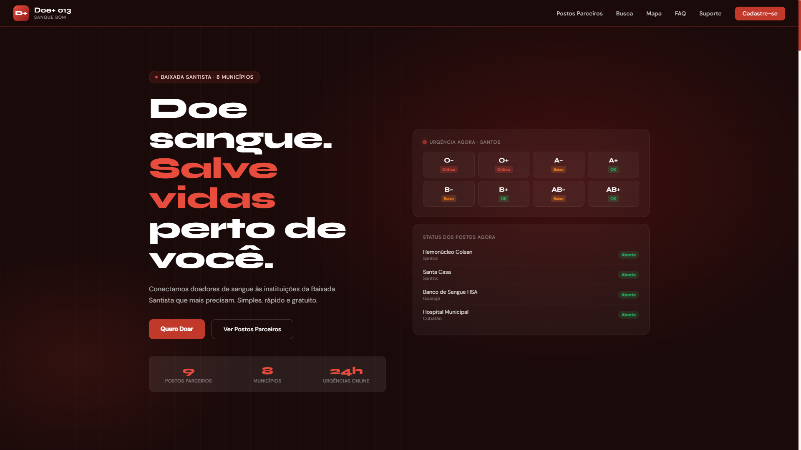

Diego Luka
Esta página do meu portfólio assim como as outras são destinadas aos projetos que fiz com meus colegas ao longo do curso de Desevolvimento de Sistemas.
KwaiCodeStudio
Este é um projeto desenvolvido em grupo para a disciplina de PTIC, além de mim, atuei junto da Eloá, Pedro Willians e Rodrigo Gouvêa, onde a nossa professora Francis propôs que desenvolvêssemos um evento de cosplay encima de um roteiro de uma folha. A folha continha instruções como se fossêmos uma empresa tentando convencer um cliente do nosso evento em seu espaço. Então havia algumas instruções específicas para o evento e seus estandes e etc... Fizemos um site e também fizemos um slide contendo as informações do evento, aonde complementava o site.

(logo e identidade da nossa equipe.)
Doe+ 013
Este foi um trabalho de inglês onde inicialmente devíamos fazer um manual para nossa plataforma. A professora Mariah havia nos dito que a pauta dos sites e manuais deveriam ser pautas sociais importantes, então eu, sugeri para meu grupo, Enzo, Pedro Willians, Pedro Henrique e Lucas Lima, que deveríamos fazer sobre a doação de sangue. Assim nasceu o Doe+ 013. Site esse que visa conscientizar, apoiar e acima de tudo, incentivar a doação de sangue.

Doe+ 013
Clique aqui para acessar o site
PrideSpace
O PrideSpace foi feito como uma ideia para o mês da diversidade. Mês esse aonde celebramos e devemos pôr a mão na cabeça sobre a comunidade LGBTQIAPN+, lembrando mais uma vez que todos devem respeitar o próximo, idependente da cor, gênero e gostos. Daí que vem o PrideSpace, na nossa matéria de PTIC fomos sorteados com um tema, eu e meu colega Pedro Henrique pegamos os Agêneros. Claro que só fazer um site sobre eles, ia ser um pouco monótono, então sugeri nós fazermos uma espécie de X (Antigo Twitter😢) onde as pessoas poderiam interagir, debater sobre gostos marcar ou participar de eventos e além de tudo, viver sem precisar se preocupar com preconceitos ou julgamentos.
Projeto 03Site Diversidade
Clique aqui para acessar o site